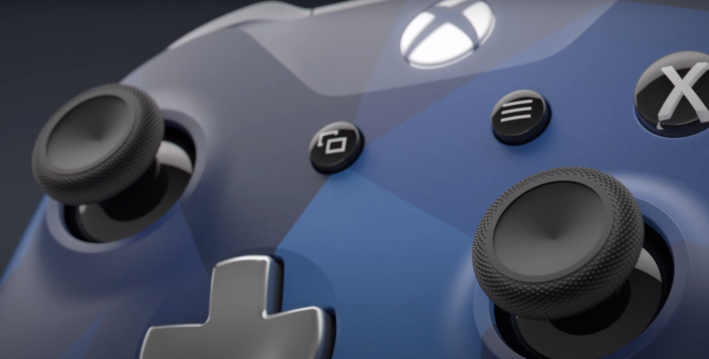

Hall Sensorを使ったトリガーの押し深度を精密に処理する Hall Sensorの特性で全部のパースが壊れても、トリガーが壊れない
Xbox one
Xbox
Xbox oneの時代で１億ドルで開発した外形
Hall Sensor

兼容性
Xbox Series X、Xbox Series S、Xbox One、以外自社のWindows、Android と iOS でお気に入りのゲームをプレイしよう。
摇杆

高精密度のかロッカーで３６０度死角なして、FPSゲームも問題ない